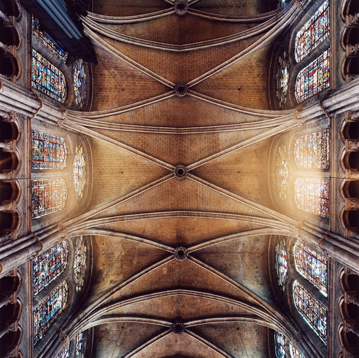
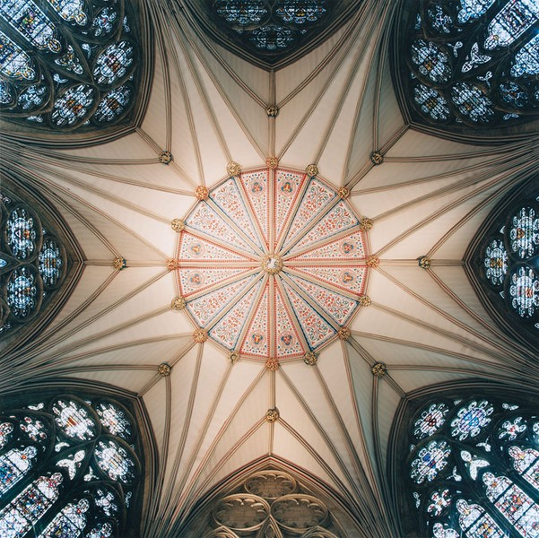
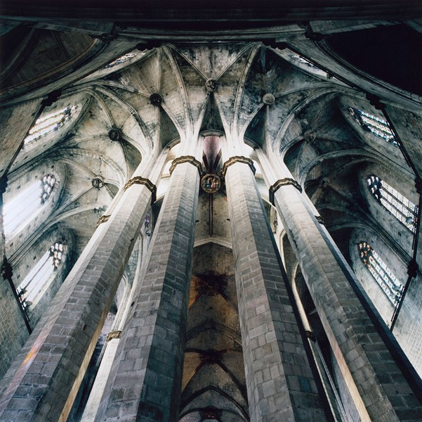
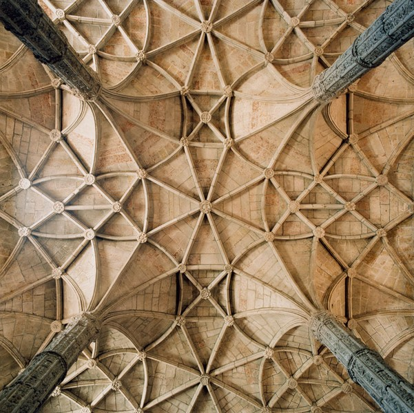
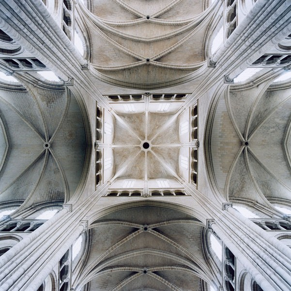
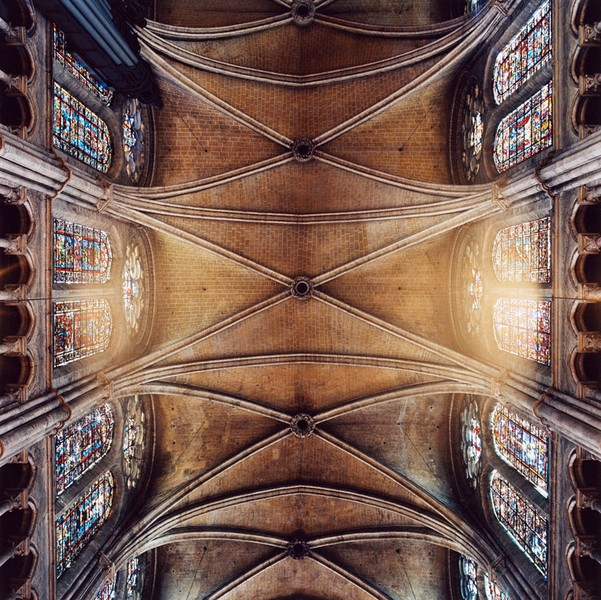
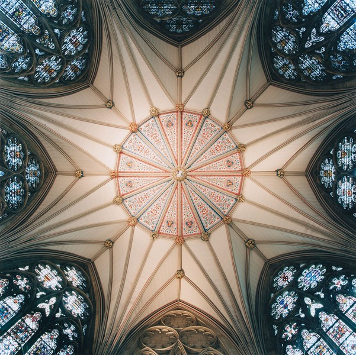
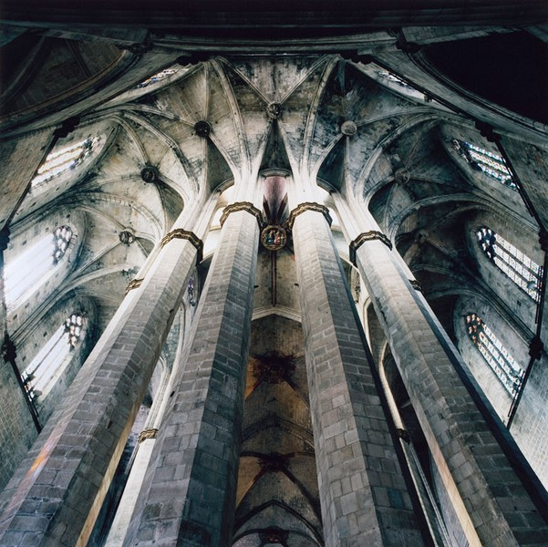
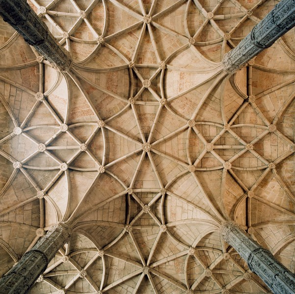
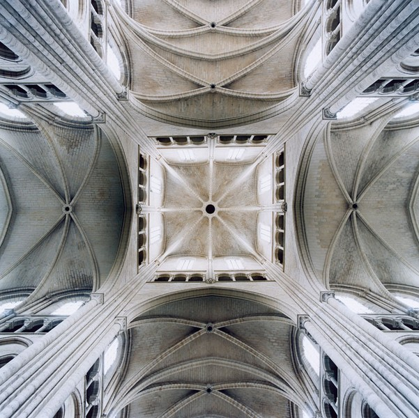

Heavenly Vaults
Full of overwhelming craftsmanship and detail, photographer David Stephenson captures the vaults and ceilings of European architecture from Romanesque to Gothic.





Full of overwhelming craftsmanship and detail, photographer David Stephenson captures the vaults and ceilings of European architecture from Romanesque to Gothic.